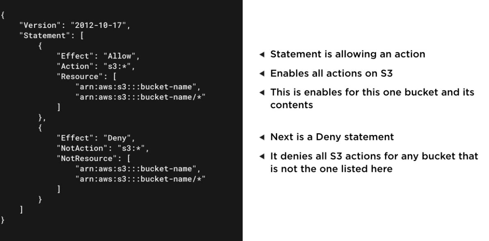

3.0 - Introduction to Security and architecture on AWS
AWS Architecture Core Concepts
Security and Architecture overview
All AWS users must remain in line with AWS's Acceptable Use Policy - determines acceptable / unacceptable usage.
Unacceptable usage includes:
Sending unsolicited mass emails
Hosting or distributing harmful content
Details penetration testing for specific services.
Least Privilege Access
When granting access to a service, grant only the minimum privileges required to complete the task
Also suggests not to use root accounts for daily account activities.
Shared Responsibility Model
When working in the cloud, security and compliance is a shared responsibility between AWS and the customer.
AWS Responsibility - Security of the cloud Access and training for Amazon employees
Global data centre and underlying data network maintenance
Hardware for global infrastructure maintenance
Configuration management for infrastructure
Patching cloud infrastructure and services
Customer Responsibility - Security for what they do in the cloud Individual access to cloud resources and training
Data security and encryption (in transit and at rest)
Operating system, network and firewall configuration (if using IaaS)
Code deployed onto cloud infrastructure.
Patching guest OS and custom applications
AWS Well-Architected Framework
A collection of best practices across 5 key areas to create systems that add business value on AWS
Key Pillars:
Operational Excellence - Running and monitoring systems for business value
Security - Running and monitoring systems for business value
Reliability - Enabling infrastructure to recover from disruptions
Performance efficiency - Efficient resource usage
Cost optimizations - Minimize costs for desired value
Available at https://aws.amazon.com/architecture/well-architected
High-Availability and Fault Tolerance
Under the reliability pillar of the well-architected framework.
2 main categories of reliability:
Fault-Tolerance - Being able to support the failure of components within architecture
High-Availability - Keeping entire solution running as expected in the event of disruption
Building solutions on AWS, consider:
Most managed AWS services offer high availability out of the box
When building solutions on EC2, fault tolerance needs to be architected.
Multiple availability zones should be leveraged
Some services can enable fault tolerance in custom applications e.g.:
Simple Queue Service (SQS)
Route 53
Compliance
Standards to note include:
PCI-DSS: For processing credit cards
HIPAA - Healthcare data
SOC 1-3 - Third-party reviews of operational processes
FedRAMP - US Government Data handling
ISO - Personal Identifier Info
Services to maintain compliance include:
AWS Config - Provides conformance packs for standards
AWS Artifact - Provides self-service access to reports
Amazon GuardDuty - Provides intelligent threat detection
AWS Config → Conformance Packs → Deploy Conformance Pack
Use template as appropriate - many standards have templates pre-done
AWS Artifact → Find desired compliance standard for review.
May need to sign NDA with AWS to allow access
Scenarios
Scenario 1
Application processing credit cards
Processing done directly not through a service
PCI DSS compliance report needed for AWS
Where to get this info? AWS Artifact to get the reports.
Scenario 2
Personal information stored in their system
What's the responsibility for security
What's their responsibility? Review the Shared responsibility model - Shared with AWS - the company is responsible for the security and compliance of anything they do on AWS with services and resources.
Scenario 3
New tool for digital asset management
How best to leverage the capabilities? Review the well-architected framework
AWS Identities and User Management
Introduction to AWS IAM
Identity and Access Management (IAM)
Controls access to AWS resources
Free to use service
Covers both authentication and authorization
Supports identity federation through SAML providers including Active Directory
IAM Identity Types: Users - Account for single individual to access resources
Groups - Allows you to manage permissions for a group of IAM users
Roles - Enables a user or AWS service to assume permissions for a task
Policies in AWS IAM JSON document that defines permissions for an AWS IAM Identity
Defines both AWS services that the identity can access and what actions can be done on that service
Can be customer-managed or managed by AWS.

Best practices:
Set up multi-factor authentication → provides additional security
Least privilege access → only grant the minimal permissions required for their current tasks
Creating and Managing IAM Users
AWS Console → IAM → Users → Add User
Provide relevant details:
Name
Access type (programmatic or management console access)
Console password
Permissions
Template policies (AWS-managed) exist for many individual resource types
Tags
Groups → Create group
Provide details:
Create group
Users → User → Groups Tab → Add user to group
Enabling Multi-Factor Authentication
MFA for root user can only be managed for root user
Account → IAM → Security → Enable MFA → Virtual MFA (Recommended) and setup accordingly
Repeat for any IAM users.
Amazon Cognito
A managed service that facilitates user directory service for custom applications.
Like IAM but for custom applications
Provides UI components for many platforms
Provides security capabilities to control account access
Enables controlled access to AWS resources
Leverages external providers such as:
Google
Amazon
Facebook
MS Active Directory
SAML 2.0
IAM Scenarios
IAM Scenario 1
Team needing access (same level to cloud systems)
Wants to do it quicker than managing each individual user
What approach? Utilise group permissions
IAM Scenario 2
EC2 Servers need access to data within S3 Buckets
Created a user in IAM for servers and uploaded keys to the server.
Is this best practice? If not what should be done?
Use an IAM Role within EC2 - Mitigates a lot of security risks → Gives the services the permissions required.
IAM Scenario 3
Transitioning to cloud
Concerns about securing access to AWS resources with a password
Wanting additional security, how?
Use Multi Factor Authentication
Data Architecture on AWS
Integrating On-Premise Data
Solutions available:
AWS Storage Gateway - A Hybrid Cloud Storage Service
AWS DataSync - Automated data transfer service
Storage Gateway
Integrates cloud storage to local network
Deployed as a VM or a specific hardware appliance
Integrates with S3 and EBS
Supports 3 gateway types:
Tape Gateway - Enables tape backup processes to store data in the cloud on virtual tapesVolume Gateway - Provides cloud-based iSCSI volumes to local applicationsFile Gateway - Stores files in Amazon S3 whilst providing cached low-latency local access
DataSync:
Agent deployed as a VM on your network
Integrates with S3, EFS and FSX for Windows File Server on AWS
Offers greatly improved transfer speed via custom protocols
Charged per GB Transferred
Processing Data
Services:
AWS Glue - Managed Extract, Transform and Load Service (ETL)
Amazon EMR - Big Data cloud processing using popular tools
AWS Data Pipeline - Data workflow orchestration service across AWS services
AWS Glue
Fully managed ETL service on aws
Supports data in Amazon RDS, DynamoDB, Redshift and S3
Supports serverless model of execution
Amazon EMR
Enables big data processing on Amazon EC2 and S3
Supports popular open source frameworks and tools
Operates in a clustered environment without additional configuration
Supports many different big data use cases
Supported EMR Framewkorks:
Apache:
Spark
Hive
HBase
Flink
Hudi
Presto
AWS Data Pipeline
Managed ETL service on AWS
Manages data workflow through AWS services
Supports S3, EMR, Redshift, DynamoDB and RDS
Analysing Data
Services:
Amazon Athena - Service that enables querying of data stored in Amazon S3
Amazon Quicksight - Business intelligence service enabling data dashboards
Amazon CloudSearch - Managed search service for custom applications
Athena
Fully managed serverless service
Enables querying of large-scale data stored within Amazon S3
Queries written using standard SQL
Charges based on data scanned per query (amount, time taken, etc)
Quicksight
Fully managed business intelligence service
Enables dynamic data dashboard based on data stored in AWS
Charged on per user and per-session pricing model
Multiple versions provided based on needs
CloudSearch
Fully managed search service on AWSSupports scaling of search infrastructure to meet demand
Charged per hour and instance type of search infrastructure
Enables developers to integrate search into custom applications.
Integrating AI and Machine Learning
Many services available - only focusing on the following:
Amazon Rekognition - Computer vision service powered by machine Learning
Amazon Translate - Text translation service powered by machine learning
Amazon Transcribe - Speech to Text solution using machine learning
Rekognition
Fully managed image and video recognition deep learning service
Identifies objects in image
Identifies objects and actions in videos
Can detect people using facial analysis
Supports custom labels for business objects
Translate
Fully managed service for translation of text
54 (at least) languages supported
Can perform language identification
Can work in batch and real-time
Transcribe
Speech to text translation - fully managed
Recorded speech converted into text in custom applications
Includes specific sub service for medical use
Supports 31 different languages and works in batch and real-time.
Data Architecture Scenarios
Data Architecture Scenario 1
Financial company
Large scale data set needs to be processed
Not wanting to manage servers, just the processing
Recommended Service: AWS Glue
Data Architecture Scenario 2
Biotech company
Wanting to identify an approach for controlled lab access
Wanting to use AI to determine access level via facial recognition
Recommended Service: AWS Rekognition
Data Architecture Scenario 3
Custom services around machine learning
Wanting visualisation of sales data
Data currently stored in Redshift
Recommended Service: AWS Quicksight - better for non-technical use case
Disaster Recovery on AWS
Disaster Recovery = Any critical situation that has a negative impact on a business continuity or finances.
Examples include hardware/software failure, network outage, data centre destruction, human error, etc.
Disaster Recovery Architecture
Architectures vary in cost, complexity, and time to restore:
Backup and Restore
All production data backed up into Amazon S3
Data can be stored in either standard or archival storage classes
EBS data can be stored as snapshots in S3
In the event of DR - a process is started to launch a new environment
Longest recovery time out of the 4 methods, but the cheapest.
Pilot Light
Key infrastructure components are kept running in the cloud
Designed to reduce recovery time compared to backup and restore - core pieces of system are kept up to date
Incurs cost of infrastructure conitnually running in the cloud
AMIs are prepared for additional systems to be launched quickly
Warm Standby
Scaled down version of the full environment running in the cloud
Critical systems can be running on less capable instance types
Instance types and other systems can be ramped up for disaster recovery event
Cost incurred for continuous running of infrastructure
Multi Site
Full environment running in the cloud at all times e.g. 1 in us-west 1 and us-west 2
Uses instance types needed for production and recovery
Provides near seamless recovery process
Incurs most cost over the other approaches
Selecting a Disaster Recovery Architecture
Need to consider:
Recovery Time Objective (RTO) - How long for the system to get back up and running to ideal business state
Recovery Point Objective (RPO) - How much data loss (in terms of time) occurs during a DR scenario.
Generally RTO and RPO decrease with increased cost
Pilot Light and Warm standby can have variable RTO and RPOs depending on the resources and services leveraged.
Disaster Recovery Scenarios
Disaster Recovery Scenario 1
Several production workloads
Disaster recovery approach needed
Seamless transition needed
Recommended approach: Multi Site
Disaster Recovery Scenario 2
Startup
No DR in place
Minimizing costs more important than RTO
Recommended approach: Backup and Restore
Disaster Recovery Scenario 3
Disaster Recovery Approach
Few key servers up and running in the event of an event
Servers have smaller instance types than production
Recommended approach: Pilot light
Architecting Applications on Amazon EC2
Scaling EC2 Infrastructure
Scaling methods available:
Vertical scaling → make servers bigger and use more resources
Horizontal scaling → scaling out and adding more servers of the same type
Services linked to EC2 to facilitate this:
Auto Scaling Group
Set of EC2 Instances with rules for scaling management
Launch template defining the instance configuration for the group
Defines the minimum, maximum and desired number of instances
Health Checks performed on each instance
Exists within 1 or more availability zones in a single region
Works with on-demand and spot instances
Elastic Load Balancer AWS Secrets Manager Secure way to integrate credentials, API keys, tokens and other secret content.
Integrates natively with RDS, DocumentDB, and Redshift
Can auto-rotate credentials with integrated services
Enables fine-grained access control to secrets
Controlling Access to EC2 Instances
Security in Amazon VPC
Security groups - enables firewall-like controls for resources within VPCs
Network ACLs - controls inbound and outbound traffic with subnets for VPCs
AWS VPN - Secure access to an entire VPC using an encrypted tunnel
Security Groups
Serve as firewall for your EC2 instances
Control inbound and outbound traffic
Works at the instance level
EC2 Instances can belong to multiple security groups
VPCs have default security groups
All outbound traffic allowed by default
Network ACLs
Works at a subnet level with a VPC
Enables you to allow and deny traffic
Each VPC has a default ACL that allows all inbound and outbound traffic
Custom ACLs deny all traffic by default
AWS VPN
Creates an encrypted tunnel into your VPC
Can be used to connect data centre or even individual client machines
Supported via:
site to site VPN - e.g. AWS and on-prem data centre interaction
Client VPN
Protecting Infrastructure from Attacks
Recommended services:
AWS Shield - Managed DDoS protection service
Amazon Macie
Amazon Inspector
DDoS = Distributed Denial of Service An attack where a server or group of servers are flooded with more traffic than they can handle in a coordinated effort to bring the system down.
AWS Shield
Provides protection against DDoS attacks for apps on AWS
Enables ongoing threat detection and mitigation
2 Different service levels:
Standard
Advanced
Amazon Macie
Utilizes machine learning to analyze data stored in S3
Can detect personal information and intellectual property in S3
Provides dashboards that show how the data is being stored and accessed
Enables alerts if it detects anything unusual about data access
Amazon Inspector
Enables scanning of EC2 instances for security vulnerabilities
Charged by instance per assessment run
Rule packages:
Network reachability assessment
Host assessment - tests for host configuration vulnerabilities
Deploying Predefined Solutions
Multiple solutions available:
Service Catalog - Managed catalog of IT services for an organization
AWS Marketplace - Catalog of software to run on AWS via 3rd parties
Service catalog Targeted to serve as an organisational service catalog for the cloud
Includes anything from single server image to multi-tier custom applications
Enables organisations to leverage services that meet compliance
Supports a lifecycle for services released in the catalog
AWS Marketplace Curated catalog of third party solutions for customers to run on AWS
Provides anything from AMIs, CloudFormation Stacks and SaaS based solutions
Enables different pricing options to overcome licensing in the cloud
Charges noted in bill
AWS CodeCommit - Basically GitHub Managed source control service
Uses git for repositories
Control access via IAM policies
Serves as an alternative to Github and Bitbucket
AWS CodeBuild - CI Fully managed build and continuous integration service
No need to maintain infrastructure
Charged per minute used for build operations
AWS CodeDeploy - CD Managed deployment service for deploying custom applications
Deploys to amazon EC2, Fargate, Lambda and On-Prem servers
Provides a dashboard for deployments in the AWS console
AWS CodePipeline → Full pipeline scenario Fully managed continuous delivery service
Automates build, test and deployment via previous services
Integrates with github
AWS CodeStar → Bootstrap pipeline for application Workflow tool to automate the use of other developer services
Creates a complete continuous delivery toolchain for a custom application
Provides custom dashboards and configurations in the AWS console
Only charged for the other services leveraged
Application Architecture Scenarios
Application Architecture Scenario 1
Financial service recently transitioned to AWS
Want to create compliant IT services that other depts can use
Recommended: Service Catalog
Application Architecture Scenario 2
Leverages AWS for multiple production workloads
Recently experienced downtime due to a app failing on EC2
Wanting to minimise downtime
Recommended: Scale out / use an auto scaling group and load balancer
Application Architecture Scenario 3
Company deals with sensitive information
Put policies for data stored in S3
Concerns about the policies being changed accidentally and breaches going unoticed
Recommended: Amazon Macie → classifies data and monitors only the recommended data.
Exam Prep
Multiple choice or multiple answer questions
Score 100-1000
Passing score = 700
Areas of focus:
Fundamental cloud concepts - 26%
Technology - 33% (AWS Global infrastructure, services, etc.)
Security and Compliance - 25% (shared responsibility, compliance reports etc)
Billing and Pricing - 15% (TCO Calculator, etc and the value provided)
Registering
Cloud practitioner cert page → portal
Create account if required (if have a partner account, sign in accordingly)
Select the exam required
Recommended Studying Steps
Cloud Concepts: How do cloud platforms differ from traditional data centres
How does AWS organise its infrastructure globally
CapEx vs OpEx
How does scalability differ in the cloud from normal data centres
Security: Shared responsibility model
Review highlighted best practices for AWS account and resources
Securing traffic within VPC
Least Privilege
IAM and Identity Types
Billing and Pricing Tools to understand AWS costs
Understand cost effective ways for core services
Cost vs data centres
How can organisations manage and review costs
Support plan levels available
Technology Each of the services in the services lists (Critical) Implement basic solutions
Review architectural principles for fault tolerance and HA
Analyze scalability approaches
Think about the intent of each question
What's required for the answer? MCQ, MAQ?
Can always come back to questions if required.
Guess if don't know - better than nothing
Important Next Steps
{kind=link}